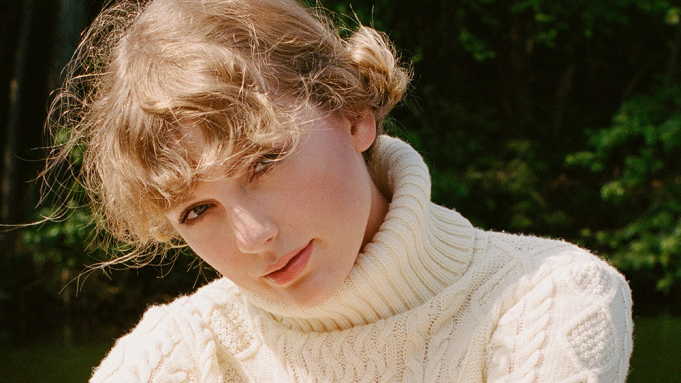
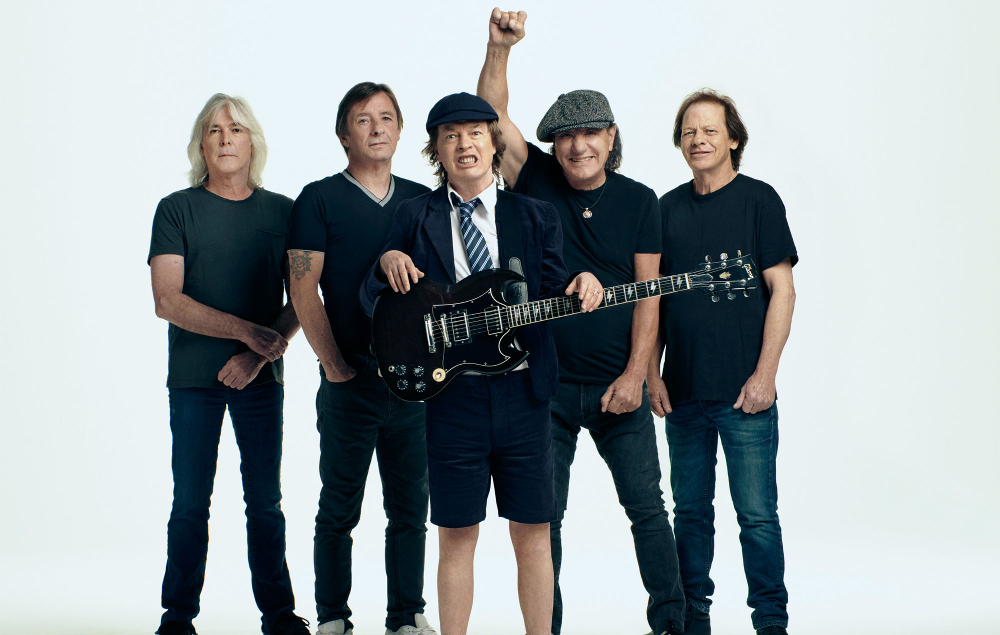

ALBATROS
ACASĂ
MUZICĂ
ȘTIRI
Program
ALBUME
CELEBRITAȚI
The Weeknd lanseaza al patrulea material discografic din cariera – After Hours – album care include hiturile „Blinding Lights”, „Heartless” sau track-ul lansat recent „After hours”.
Inna a petrecut 3 săptămâni alături de echipa ei în Dance Queen’s House, timp în care a înregistrat noul album, „Heartbreaker”. Materialul conține 10 piese în limba engleză și este disponibil pe Youtube.
Paris Jackson a lansat single-ul „Let Down”, primul de pe albumul de debut „Wilted”.
Albumul Folklore, semnat Taylor Swift, a devenit primul album vândut în peste 1 milion de copii, în 2020, în Statele Unite
Sam Smith a lansat albumul „Love Goes”.

Taylor Swift a lansat albumul "Evermore", un nou LP "născut" în pandemie.

Albumul AC/DC "Power Up" ajunge pe locul întâi în topul Billboard 200.
Miley Cyrus a lansat un nou album, "Plastic Hearts", cu un spirit rock puternic.
Ellie Goulding lansează EP-ul "Songbook for Christmas".
Andrea Bocelli lansează albumul "Believe" și anunță concertul online "Believe in Christmas"
Ariana Grande a lansat albumul "Positions", ce include colaborări cu The Weeknd și Doja Cat.
Drake anunţă data de lansare a noului album, "Certified Lover Boy"
DJ
Radio
Top